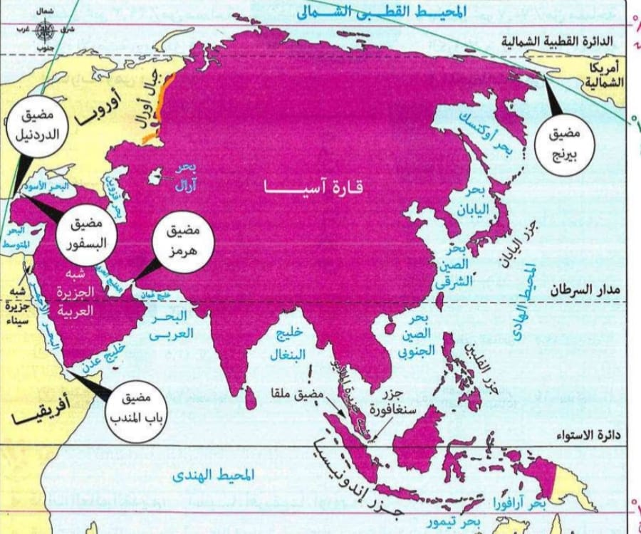
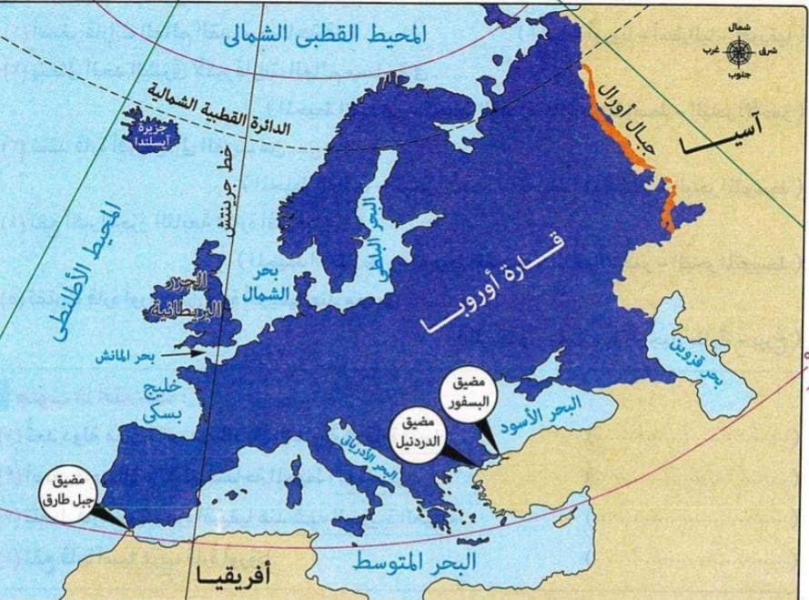
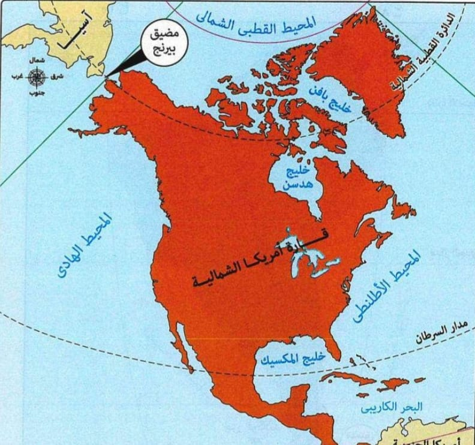
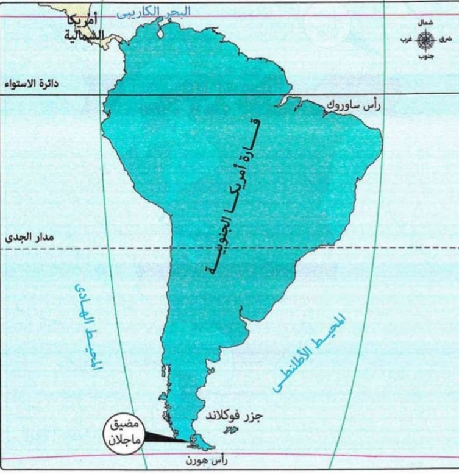
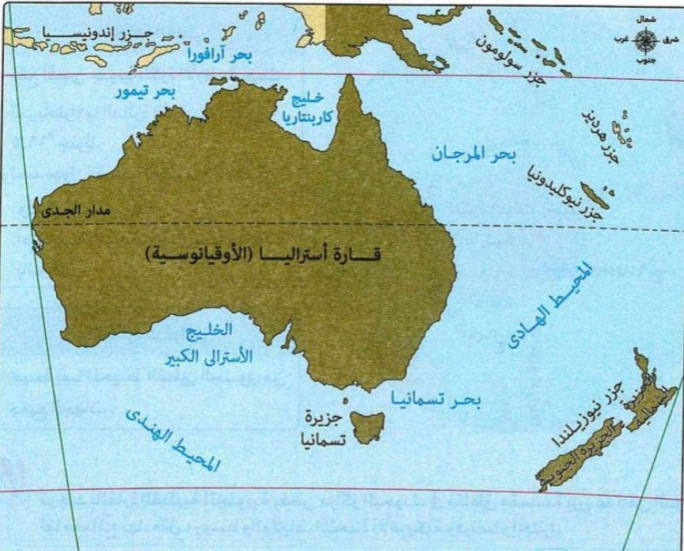
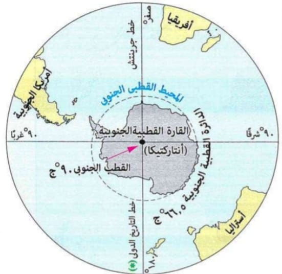

قارة أفريقيا 🌍
الموقع الفلكي: تمتد بين 37°30 شمالاً و34°30 جنوباً، وخطي طول 17° غرباً و51° شرقاً.
الموقع الجغرافي: يحدها شمالاً البحر المتوسط، شرقاً المحيط الهندي والبحر الأحمر، غرباً المحيط الأطلنطي.
📷 أضف هنا خريطة قارة أفريقيا

تبلغ مساحة الكرة الأرضية حوالي 510 مليون كم²، وتنقسم إلى:
تنقسم القارات إلى:
الموقع الفلكي: تمتد بين دائرتي عرض 81 شمالاً و10 جنوباً، وخطي طول 26 شرقاً و170 غرباً.
الموقع الجغرافي: يحدها شمالاً المحيط القطبي الشمالي، شرقاً المحيط الهادي، جنوباً المحيط الهندي، غرباً أوروبا والبحر الأحمر.
📷 أضف هنا خريطة قارة آسيا
الموقع الفلكي: تمتد بين 37°30 شمالاً و34°30 جنوباً، وخطي طول 17° غرباً و51° شرقاً.
الموقع الجغرافي: يحدها شمالاً البحر المتوسط، شرقاً المحيط الهندي والبحر الأحمر، غرباً المحيط الأطلنطي.
📷 أضف هنا خريطة قارة أفريقيا
الموقع الفلكي: تمتد بين دائرتي عرض 36° و71° شمالاً، وخطي طول 25° غرباً و66° شرقاً.
الموقع الجغرافي: يحدها شمالاً المحيط القطبي الشمالي، شرقاً آسيا، جنوباً البحر المتوسط، غرباً المحيط الأطلنطي.
📷 أضف هنا خريطة قارة أوروبا
الموقع الفلكي: بين دائرتي عرض 7°30 شمالاً و83° شمالاً، وخطي طول 10° و168° غرباً.
الموقع الجغرافي: يحدها شمالاً المحيط القطبي الشمالي، شرقاً الأطلنطي، غرباً الهادي، وجنوباً البحر الكاريبي.
📷 أضف هنا خريطة قارة أمريكا الشمالية
الموقع الفلكي: تمتد بين 12° شمالاً و56° جنوباً، وخطي طول 35° و81° غرباً.
الموقع الجغرافي: يحدها شمالاً البحر الكاريبي، شرقاً المحيط الأطلنطي، غرباً المحيط الهادي.
📷 أضف هنا خريطة قارة أمريكا الجنوبية
الموقع الفلكي: تمتد بين دائرتي عرض 10° و44° جنوباً، وخطي طول 113° و178° شرقاً.
الموقع الجغرافي: يحدها شمالاً بحر آرافورا، شرقاً المحيط الهادي، جنوباً المحيط الهندي، وغرباً المحيط الهندي.
📷 أضف هنا خريطة قارة أستراليا
الموقع الفلكي: تقع عند الدائرة القطبية الجنوبية 66.5° جنوباً وتمتد حتى القطب الجنوبي 90°.
الموقع الجغرافي: يحيط بها المحيط القطبي الجنوبي من جميع الجهات، وهي متجمدة وغير مأهولة بالسكان.
📷 أضف هنا خريطة القارة القطبية الجنوبية
